工作日志 2026-07-15 (2026年7月15日 · 周三)
HV2M23 数字验证 · 工作日志报告
HV2M23
仿真通过 10/10
任务
仿真 / 回归
t_8b2lane_PON_OPT_I
描述该 case 已作废。PON_OPT 是上电配置选项：PON_OPT=1 时，上电会将 DRA_CS 拉高；PON_OPT=0 时，会额外将 CS_AGND 拉低。
t_8b2lane_PON_OPT_I1
背景PON_OPT=L 表示上电输出拉 GND；PON_OPT_GND=H 表示上电时输出 short together，进入 charge-share 模式。
描述本 case 验证上电阶段即将 PON_OPT_I 置为 1 的场景。此时上电选项 PON_OPT=1，会使 DRA_CS 在上电时直接拉高，而不再额外拉低 CS_AGND。
检查点上电后 sim_out 应稳定为 0x88（对应 charge-share 短路模式）；CS_AGND 不应再被拉高，DRA_CS 保持为高；数据检查由脚本自动完成。
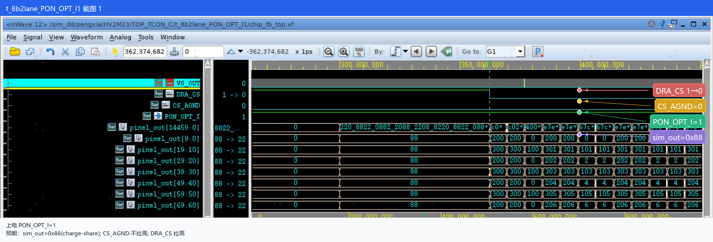
t_8b2lane_WAKE_I
背景WAKE_CS_SEL 决定 WAKE 唤醒后的输出状态：00=AGND、01=HAVDD、1X=HiZ；WAKE_PD_OPT 决定功耗模式：00=Normal（正常）、01=CDR lane 掉电、10=CDR lane 掉电且 SD 关断、11=SD 关断且 CDR 异步。
描述在默认配置 WAKE_CS_SEL=10（HiZ）、WAKE_PD_OPT=10（CDR lane 掉电且 SD 关断）下，验证 WAKE 信号从 1→0→1 的完整切换过程。TEST7 修改后，WAKE 信号接入数字域。
检查点WAKE_I 出现 1→0→1 跳变时，输出 sim_out 应为 0x22（高阻态 HiZ）；reg_lane_pd 应被拉高，表示 CDR lane 进入掉电状态；POFF_DRA_CH、POFF_DRA_BIAS、POFF_DRA_CH0_1446R/L 等 SD 关断信号应被拉高（channel=1440 时，721-726L 恒为 1）。
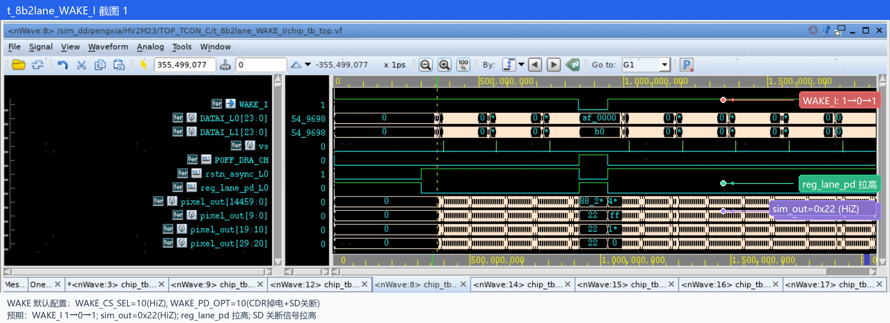
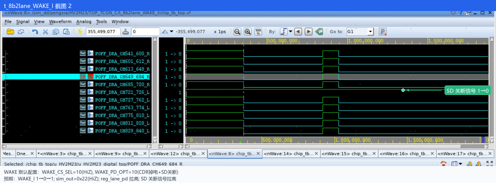
t_8b2lane_WAKE_CS_SEL0
背景同上
描述将 WAKE 输出选择配置为 00（AGND），其余保持默认 WAKE_PD_OPT=10，验证 WAKE 切换时输出被拉至 AGND。
检查点sim_out 应为 0x00（AGND 模式）；reg_lane_pd 拉高；SD 关断相关信号拉高；CS_AGND 被拉高。
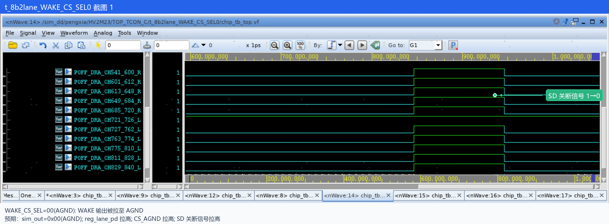
说明WAKE_CS_SEL0 的另一张原始截图（应为 POFF_DRA_CH 相关信号）在之前的自动标注过程中被误删除，当前缺失。待重新提供后可补入。
t_8b2lane_WAKE_CS_SEL1
背景同上
描述将 WAKE 输出选择配置为 01（HAVDD），其余保持默认 WAKE_PD_OPT=10，验证 WAKE 切换时输出被拉至 HAVDD。
检查点sim_out 应为 0xAA（HAVDD 模式）；reg_lane_pd 拉高；SD 关断相关信号拉高；CS_HVDDA 被拉高。
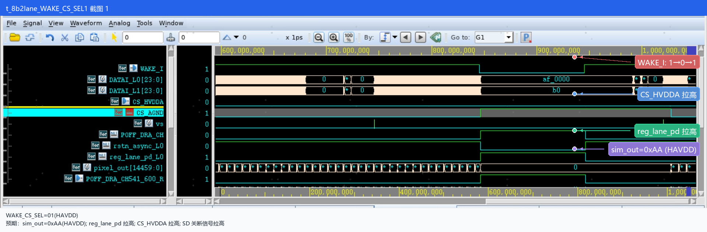
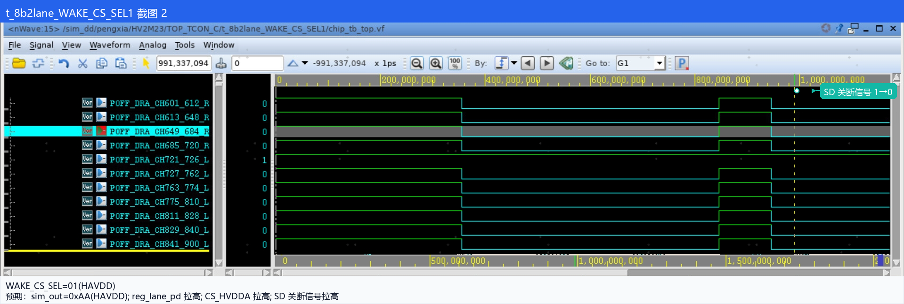
t_8b2lane_WAKE_CS_SEL3
背景同上
描述将 WAKE 输出选择配置为 11（HiZ），其余保持默认 WAKE_PD_OPT=10，验证 WAKE 切换时输出呈高阻态。
检查点sim_out 应为 0x22（HiZ 模式）；reg_lane_pd 拉高；SD 关断相关信号拉高。
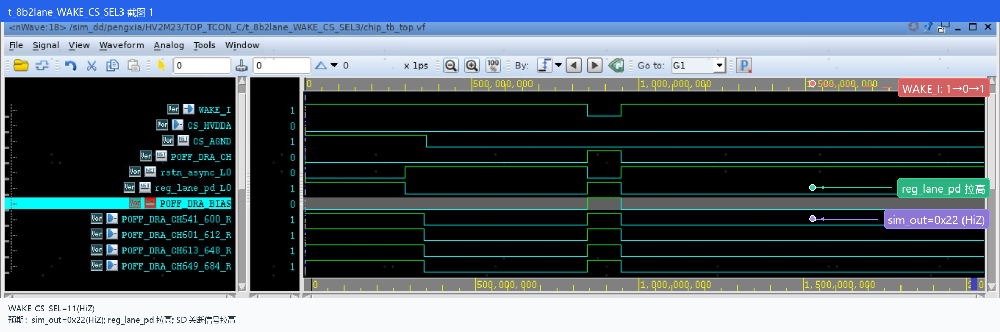
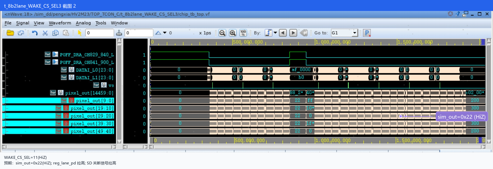
t_8b2lane_WAKE_PD_OPT0
背景同上
描述WAKE 输出选择保持默认 HiZ，功耗选项配置为 00（Normal，正常模式），验证 WAKE 切换时 CDR 与 SD 均不掉电。
检查点WAKE_I 1→0→1 切换时，sim_out 保持 WAKE 拉低前的值；reg_lane_pd 保持不变（CDR lane 不掉电）；SD 关断相关信号保持不变（SD 未关断）。
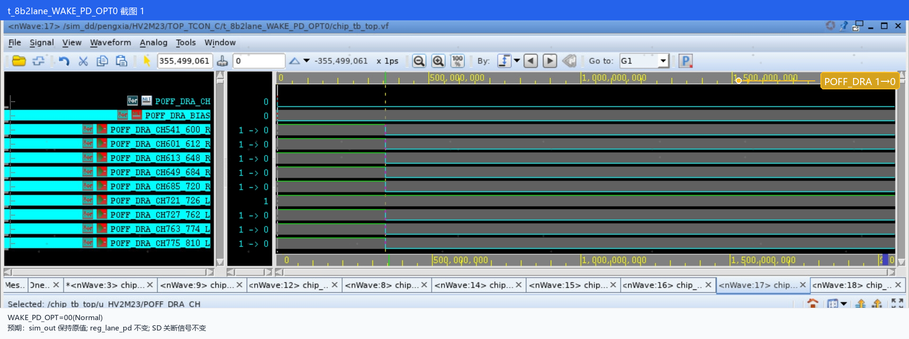
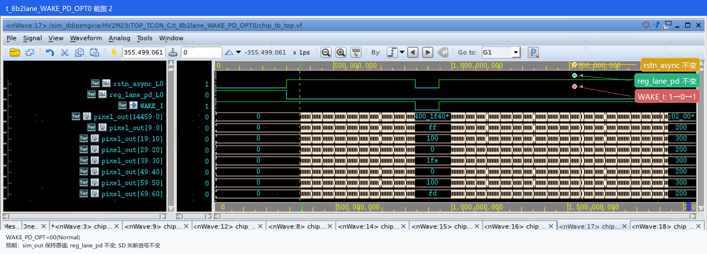
t_8b2lane_WAKE_PD_OPT1
背景同上
描述WAKE 输出选择保持默认 HiZ，功耗选项配置为 WAKE_PD_OPT=01，验证 CDR lane 掉电模式下 WAKE 切换行为。
检查点WAKE_I 1→0→1 切换时，sim_out 保持 WAKE 拉低前的值；reg_lane_pd 拉高（CDR lane 掉电）；SD 关断相关信号不变（无 SD off）。
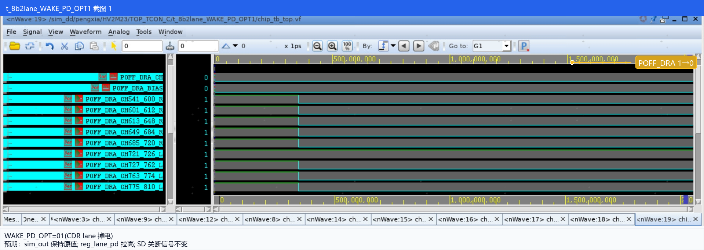
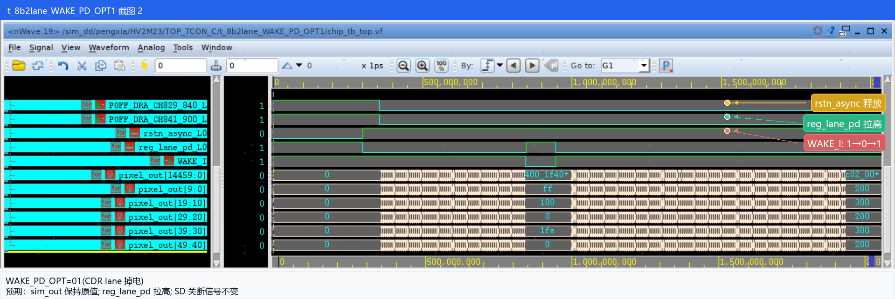
t_8b2lane_WAKE_PD_OPT3
背景同上
描述WAKE 输出选择保持默认 HiZ，功耗选项配置为 11（SD 关断、CDR 异步），验证 WAKE 切换时 SD 关断但 CDR 不掉电。
检查点sim_out 应为 0x22（HiZ 模式）；reg_lane_pd 不拉高（CDR lane 不掉电）；SD 关断相关信号拉高。
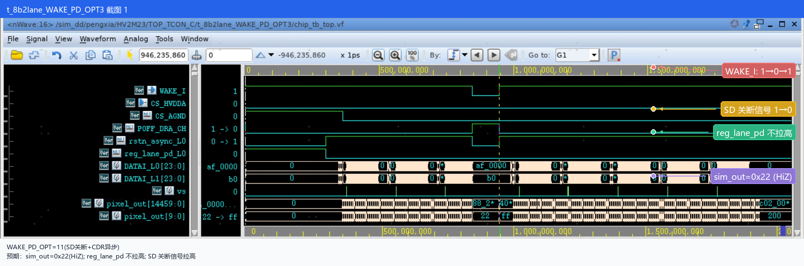
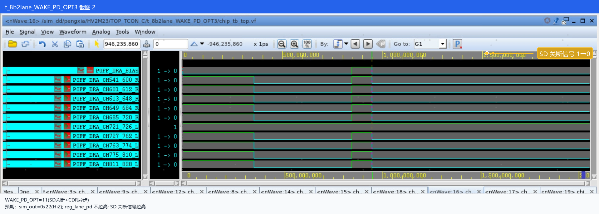
t_8b2lane_XON
描述验证 XON（输出使能）信号对 sim_out 输出的控制作用。
检查点1) 仿真过程中将 XON 拉低后再拉高；2) XON=0 期间需手动检查波形，确认 sim_out 输出为 0，包括 data chopper polarity；3) analog 按帧检查，时序上 XON 信号不易传到 scoreboard，不影响寄存器，不做自动检查；4) XON=0 时 SOUT pull GND（SIM_OUT=0），XON=1 时为 Normal Work。
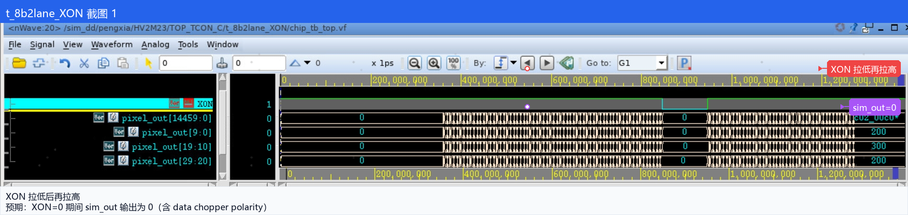
阻塞 / 明日计划 / 笔记
阻塞 / 待协调
- CDR ASYNC 对应的信号 rstn_async_L0/L1 行为存疑，待 yongjie 确认 → yjluo：只有 01 不會拉 ASYNC，看 1V21 的仿真結果就這樣了，先 Keep 吧
- HV2M23.v 中，模拟的输入 PON_OPT 为恒零，是否需要修改？ → 鈺文：当初怕他 unknown 加的，應該可以拿掉，IO Behavior Model 有 Tie 值